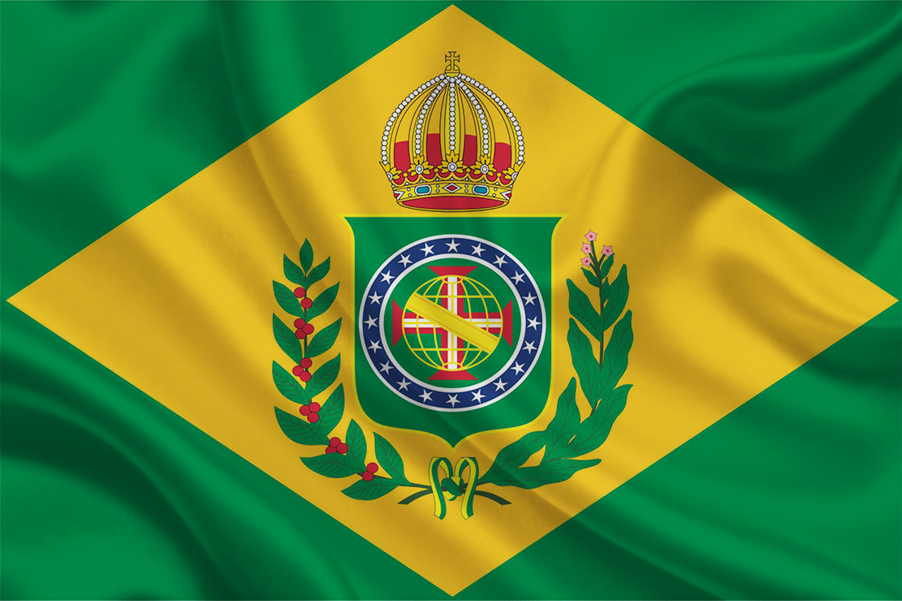

|

|

|

|
Primeiro reinado (1822-1831)
O principal ícone da independência brasileira foi Pedro de Alcântara (o quarto filho de D. João VI), que, após esse processo, torna-se o primeiro imperador do Brasil, assumindo a alcunha de Pedro I do Brasil. Diferentemente de seu pai, Pedro I admirava os ideais iluministas, defendia ideias liberais, como a abolição da escravidão, e liberdades individuais.
Bandeira do Brasil Imperial
A construção de símbolos nacionais é parte fundamental de um Estado-nação. Assim foi com o Brasil após tornar-se independente.
Nesse contexto, surgem dois grupos políticos informais na disputa por espaços de poder: o Partido Português, que concentrava defensores do absolutismo, de um governo centralizado e forte, dos comerciantes portugueses e, muitas vezes, da restauração do Brasil enquanto colônia de Portugal; e o Partido Brasileiro, composto por comerciantes brasileiros, latifundiários e senhores de escravos, cujos principais objetivos eram na defesa e a ampliação de direitos e privilégios conquistados.